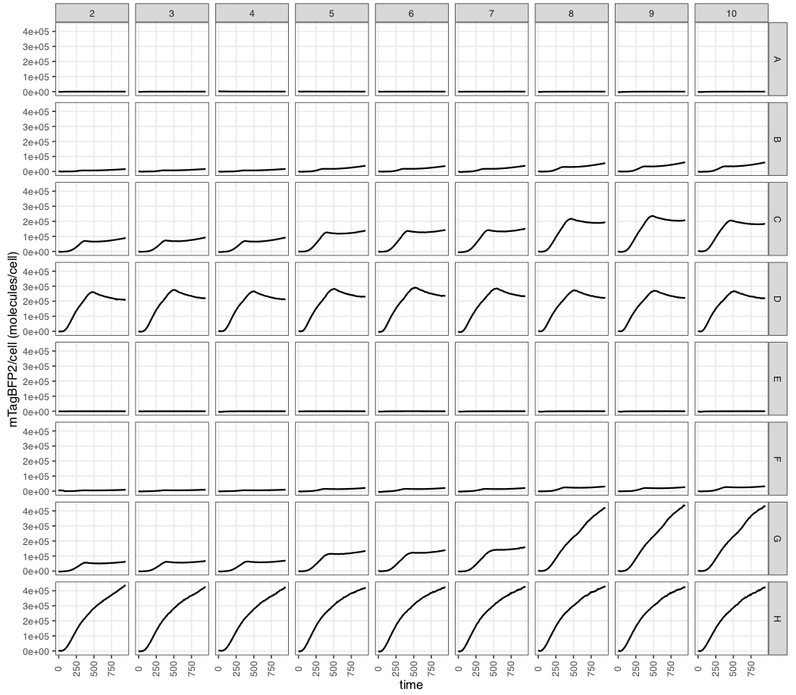
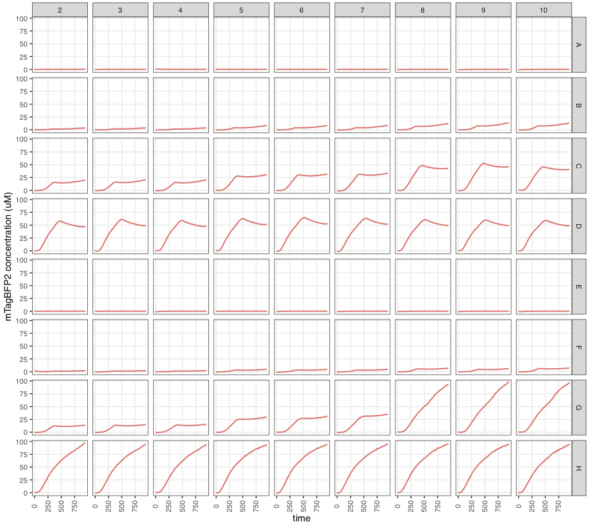

Installation
The package is written in R and can be installed straight from GitHub:
# install.packages("devtools")
devtools::install_github("ec363/fpcountr")Example data
The package comes with example data to get you started. To find the data folder, use:
system.file("extdata", "", package = "fpcountr", mustWork = TRUE)This will give you the location of the files.
Create a new folder for this worked example (e.g.. called fpcountr_example) and copy all of the files into a subfolder called data. So your data should be under fpcountr_example/data. Next, open RStudio, start a new R session and navigate to the fpcountr_example folder.
Worked example
Load all relevant libraries.
Protein concentration determination with the ECmax assay
Identify the relevant files for this assay:
data_folder <- "data"
raw_data_spectrum <- "absorbance_scan" # without .csv
data_layout_spectrum <- "absorbance_scan_layout.csv" # with csv1. Parse spectrum data
parsed_data_spectrum <- magellan_spectrum_parse(data_csv = file.path(data_folder, paste0(raw_data_spectrum, ".csv")),
layout_csv = file.path(data_folder, data_layout_spectrum),
wellstart = "A1", wellend = "H12")
parsed_data_spectrum[1:5,1:20] # check parsed absorbance spectrum looks good2. Process spectrum data
Buffer and path length
For absorbance data, path lengths require calculation. This can be done in 3 ways:
- calculation using the 900-1000nm region for each well (use
pl_method = "calc_each"), - calculation using the 900-1000nm region for the blanks, which is
used for all wells (use
pl_method = "calc_blanks"), - by using previously obtained relationship of volume:path length
using water (use
pl_method = "volume").
For the first two, the buffer and temperature needs to be specified.
view_kfactors() allows the inspection of possible buffer
types.
- The specified ‘buffer_used’ needs to match one of the buffers listed in this table. (The example data was carried out with T5N15_pi buffer, this is most closely represented by “TBS” (Tris-buffered saline).)
- The number specified for ‘concentration_used’ needs to match the units in those tables. (Example: 0.005 M)
- The number specified for ‘temperature_used’ does not need to match those in the temperature table. (Example: 30)
For the third, make sure the absorbance_scan_layout.csv
file contains a completed volume column (in ul).
Provide mTagBFP2 protein sequence
For the example data, the protein sequences are available from within
the package in the protein_seq_data dataset.
For other FPs, protein sequences in 1-letter code need to be provided for the following functions (to allow function to work out the molecular weight).
protein_seq <- fpcountr::protein_seq_data %>%
dplyr::filter(slug == "mtagbfp2") %>%
dplyr::select(sequence) %>%
as.character()
protein_seqProcess spectra
dir.create("protquant") # Create folder for get_concentration functions' output files
# Process spectra (correct for for path length and normalise to blanks)
processed_data_spectrum_t5n15pi <- plot_absorbance_spectrum(
spectrum_csv = file.path(data_folder, paste0(raw_data_spectrum, "_parsed.csv")),
subset_rows = TRUE, rows_to_keep = c("G","H"), columns_to_keep = c(1:12),
xrange = c(250,1000),
# for path length
pl_method = "calc_blanks", # options: "calc_each", "calc_blanks", "volume"
buffer_used = "TBS", concentration_used = 0.005, temperature_used = 30,
outfolder = file.path("protquant/ECmax_T5N15pi"))
processed_data_spectrum_t5n15pi

3. Get concentration using ECmax assay
# Use maximum absorbance wavelength (ECmax) of processed spectra to calculate protein concentrations
buffer_name <- "T5N15_pi"
proteinconcs_ecmax_t5n15pi <- get_conc_ECmax(protein_slug = "mtagbfp2",
protein_seq = protein_seq,
processed_spectrum_csv = file.path("protquant/ECmax_T5N15pi", paste0(raw_data_spectrum, "_parsed_processed.csv")), # processed data
# wells_to_remove = c(),
corr_method = "scatter",
wav_to_use1 = 500, wav_to_use2 = 315,
outfolder = file.path("protquant/ECmax_T5N15pi/concentration_from_ecmax"),
filename = "fp_properties_fpbase.csv" # what to name FPbase file
)
proteinconcs_ecmax_t5n15pi[1:12,] # example data should give 4.8 ng/ul for the top concentration


Conversion factor calculation
Identify the relevant files for this assay:
# data_folder <- "data"
raw_data_fluor <- "fluorescence_data" # without .csv
data_layout_fluor1 <- "fluorescence_data_layout.csv" # with csv
dir.create("conversion_factors")Assemble the data layout file from the provided data layout file and the concentrations obtained from the ECmax assay above.
# 0. Assemble Data Layout final: join protein concentration data to fluorescence_data_layout.csv
# data_layout_fluor1 # contains minimal info on all wells
data_layout_fluor2 <- "protquant/ECmax_T5N15pi/concentration_from_ecmax/protein_concs_ecmax.csv" # contains concentrations from ECmax assay
# Join
data_layout_fluor1_DF <- read.csv(file = file.path(data_folder, data_layout_fluor1))
data_layout_fluor2_DF <- read.csv(file = file.path(data_layout_fluor2))
join_DF <- dplyr::left_join(x = data_layout_fluor1_DF, y = data_layout_fluor2_DF)
join_DF[25:36,] # check concentration was joined with data layout correctly
# move well column to right hand side - important for generate_cfs script
join_DF <- cbind(join_DF[ , !names(join_DF) %in% c("well")], join_DF[ , "well"]) # rearrange order
names(join_DF)[ncol(join_DF)] <- "well" # rename last column
write.csv(x = join_DF, file = file.path("conversion_factors/plate_layout_joined_t5n15pi.csv"), row.names = FALSE) # create new data layout file
data_layout_fluor <- "conversion_factors/plate_layout_joined_t5n15pi.csv" # with csv1. Parse fluorescence data
parsed_data <- magellan_parse(data_csv = file.path(data_folder, paste0(raw_data_fluor, ".csv")),
layout_csv = file.path(data_layout_fluor),
timeseries = FALSE)
parsed_data2. Generate conversion factors
fitvals <- generate_cfs(calibration_csv = file.path(data_folder, paste0(raw_data_fluor, "_parsed.csv")),
more_csvs = TRUE, more_plots = TRUE, sensitivity_plots = TRUE,
# columns/channels to include/exclude:
include_only = "blueblue", exclude = NULL,
# column/channel fixes:
gain_fix = TRUE, # fixes order of fluor channels w gains by making 2digits->3digits (e.g. 040->40)
rename_from = "blueblue", rename_to = "blueblue ", # adding space here helps to extract gain
separator = "", # the character between `rename_to` value (e.g. "blueblue") and the gain number (e.g. 040)
complete_blank = TRUE,
subset_rows = TRUE, rows_to_keep = c("G","H"),
outfolder = file.path("conversion_factors/T5N15pi") # where to create conversion factor plots and csv files
)
fitvals
Assemble conversion factors
FP conversion factors
If multiple FPs are being calibrated, assembly can be used to join various files together. Here we will just simplify the conversion factor file and move it into a conversion factor folder.
fp_conversion_factors <- read.csv(file.path("conversion_factors/T5N15pi/6_conversion_factors.csv"))
fp_conversion_factors <- fp_conversion_factors %>%
dplyr::select(instrument, plate, channel_name, media, calibrant, protein, mw_gmol1, measure, gain, cf, beta)
fp_conversion_factors
write.csv(fp_conversion_factors, file.path("conversion_factors/fp_conversion_factors_assembled.csv"), row.names = FALSE)OD conversion factors
These can be obtained according to protocols in the FlopR package/paper. An example calibration output is provided with the example data.
od_conversion_factors <- read.csv(file.path("data/od_conversion_factors.csv"))
od_conversion_factorsOur recommendation is that these are not used “as is”, because the OD700/OD600 ratio doesn’t match that of cells. To allow cross comparison of OD600 and OD700 data, the OD700 conversion factors should be calculated from the OD600 ones:
od_conversion_factors2 <- od_conversion_factors %>%
dplyr::filter(measure == "OD600") %>%
dplyr::select(instrument, plate, calibrant, measure, cf) %>%
tidyr::pivot_wider(names_from = measure, values_from = cf) %>%
dplyr::mutate(OD700 = OD600/1.31) %>%
tidyr::pivot_longer(cols = c(OD600, OD700), names_to = "measure", values_to = "cf")
od_conversion_factors2
write.csv(od_conversion_factors2, file.path("conversion_factors/od_conversion_factors_assembled.csv"), row.names = FALSE)Processing data from E. coli Fluorescent Protein expression experiments
data_folder <- "data"
raw_data <- "20210501_mTagBFP2_ecoli_response_data" # without .csv
data_layout <- "20210501_mTagBFP2_ecoli_response_data_layout.csv" # with csv1. Parse data
parsed_data <- magellan_parse(data_csv = file.path(data_folder, paste0(raw_data, ".csv")),
layout_csv = file.path(data_folder, data_layout),
timeseries = TRUE,
timestart = "0s",
interval = 10, # in minutes
mode = "read_first", # mode can only be "read_first" or "incubate_first"
metadata_above = 1, # Well Positions
metadata_below = 0,
# metadata is how many lines of metadata was requested w the data # e.g. well positions, layout, replicate info.
custom = TRUE, startcol = 3, endcol = 97, insert_wells_above = 0, insert_wells_below = 1
)
parsed_data[1:12,]2. Process data
processed_data <- process_plate(data_csv = file.path(data_folder, paste0(raw_data, "_parsed.csv")),
blank_well = c("A11", "B11", "C11", "D11", "E11", "F11", "G11", "H11"), # wells with media only
# od
od_name = "OD700",
# fluorescence
flu_channels = c("blue"), # column names in data that represent fluorescence channel(s)
flu_channels_rename = c("blueblue"), # rename data columns to make sure they match conversion factor table entries
# correction
do_quench_correction = TRUE,
od_type = "OD700",
# calibrations
do_calibrate = TRUE,
instr = "spark1", # instrument name for the calibration(s)
# flu_channels above specifies channel(s) for the calibration(s)
flu_slugs = c("mTagBFP2"),
# FP name in FPbase's slug format for the calibration(s)
# OR whatever matches the format used in the conversion factor files
flu_gains = c(60), # gain for calibration(s)
# each of the above need to be specified for every flu_channels being calibrated
flu_labels = c("mTagBFP2"),
# how to display the FP/channel combination in plots and file names
# important if slug is unhelpful or multiple gains used for same FP
# conversion factors
od_coeffs_csv = "conversion_factors/od_conversion_factors_assembled.csv", # microsphere calibs for od600, 700
fluor_coeffs_csv = "conversion_factors/fp_conversion_factors_assembled.csv", # predicted cfs tables for all instr/channels/gains/FPs
# autofluorescence model
af_model = "spline", # options: NULL, "spline", "loess"
neg_well = c("A2", "A3", "A4", "A5", "A6", "A7"), # wells with cells+no FP # if af_model = NULL this can be hashed
outfolder = file.path("mTagBFP2_responsecurve_analysis") # specify folder for output files
)
processed_data[13:24,] # row B


3. Calculate per cell values
pc_data_mTagBFP2 <- calc_fppercell(data_csv = file.path("mTagBFP2_responsecurve_analysis", paste0(raw_data, "_parsed_processed.csv")),
flu_channels = c("blueblue"), # colnames of normalised values (rfu)..
flu_labels = c("mTagBFP2"), # colnames of calibrated values (molecules)..
#.. according to what was specified in process_plate()
remove_wells = c("A11", "B11", "C11", "D11", "E11", "F11", "G11", "H11", # media
"A1","B1", "C1", "D1", "E1", "F1", "G1", "H1",
"A12","B12", "C12", "D12", "E12", "F12", "G12", "H12" # empty wells
# no anomalies
),
get_rfu_od = TRUE,
get_mol_cell = TRUE,
outfolder = file.path("mTagBFP2_responsecurve_analysis", "percell_data"))
pc_data_mTagBFP2[13:24,10:16]
4. Calculate cellular concentration
molar_data_mTagBFP2 <- calc_fpconc(data_csv = file.path("mTagBFP2_responsecurve_analysis", paste0(raw_data, "_parsed_processed.csv")),
flu_channels = c("blueblue"), # colnames of normalised values (rfu)..
flu_labels = c("mTagBFP2"), # colnames of calibrated values (molecules)..
# ..according to what was specified in process_plate()
remove_wells = c("A11", "B11", "C11", "D11", "E11", "F11", "G11", "H11", # media
"A1","B1", "C1", "D1", "E1", "F1", "G1", "H1",
"A12","B12", "C12", "D12", "E12", "F12", "G12", "H12" # empty wells
# no anomalies
),
get_rfu_vol = TRUE,
get_mol_vol = TRUE,
od_specific_total_volume = 3.6,
odmeasure = "OD700",
odmeasure_conversion = 0.79, # typically 1 for OD600, 0.79 for OD700
outfolder = file.path("mTagBFP2_responsecurve_analysis", "molar_data"))
molar_data_mTagBFP2[13:24,10:16]
These files can then be used to analyse data in absolute quantities…

Further information
The paper covers the purpose and structure of these functions in more detail.
- overview of all functions - Supplementary Fig. 13
-
plot_absorbance_spectrum()- Supplementary Fig. 6 - path length correction - Supplementary Fig. 4
-
get_conc_ECmax()- Supplementary Fig. 8 -
generate_cfs()- Fig.3 and Supplementary Fig. 3 - microsphere calibrations - Supplementary Fig. 11
-
process_plate()- Fig. 4-5 -
calc_fppercell()andcalc_fpconc()- Fig. 5